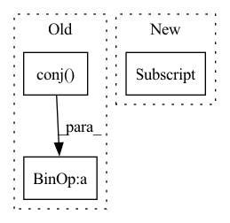

Pattern ID :2370
Before Change
step = 1.0 / L
// Compute a HiPPO NPLR matrix.
_, Lambda, p, q, V = make_NPLR_HiPPO(N)
Vc = V.conj() .T
p = Vc @ p
q = Vc @ q.conj()
B = lecun_normal(dtype=np.complex64)(rng, (N, 1))
B = Vc @ B
// Random complex CtAfter Change
step = 1.0 / L
// Compute a HiPPO NPLR matrix.
Lambda, p, B, _ = make_DPLR_HiPPO(N)
B = B[:, np.newaxis]
// Random complex Ct
Ct = lecun_normal(dtype=np.complex64)(rng, (1, N))
// CNN form.In pattern: SUPERPATTERN
Frequency: 3
Non-data size: 3
Instances Fragment ID: 9988616
Project Name: srush/annotated-s4
Commit Name: 19025c3e2db20e5c9ad79a64b32c6d650843a741
Time: 2022-06-05
Author: albertfgu@gmail.com
File Name: s4/s4.py
M Class Name: AnonimousClass
N Class Name: AnonimousClass
M Method Name: test_conversion(2)
N Method Name: test_conversion(2)
M Parent Class:
N Parent Class:
M File Name: s4/s4.py
N File Name: s4/s4.py
M Start Line: 1132
M End Line: 1149
N Start Line: 1144
N End Line: 1157
Before Change
self.q = q
self.B = Param((N, 1))
self.C = Param((1, N))
self.A = np.diag(self.Gamma) - self.p @ self.q.conj() .T
self.ssm = SSM(self.A, self.B, self.C)
self.discrete = discretizeSSM_bilinear(self.ssm, step)After Change
self.q = q
self.B = Param((N, 1))
self.C = Param((1, N))
self.A = np.diag(self.Gamma) - self.p[:, np.newaxis] * self.q[np.newaxis, :] .conj()
self.ssm = SSM(self.A, self.B, self.C)
self.discrete = discretizeSSM_bilinear(self.ssm, step) Fragment ID: 9988618
Project Name: srush/annotated-s4
Commit Name: c49f5fdaebb0eb5e418bb5800499152dc5c77661
Time: 2021-12-16
Author: srush.research@gmail.com
File Name: s4.py
M Class Name: S4
N Class Name: S4
M Method Name: __init__(4)
N Method Name: __init__(4)
M Parent Class:
N Parent Class:
M File Name: s4.py
N File Name: s4.py
M Start Line: 131
M End Line: 141
N Start Line: 131
N End Line: 140
Before Change
step = self.log_step * 1.0 / self.l_max
I = np.eye(self.N)
Abar, _, Cbar = discretize(self.A, self.B, self.C, step)
self.Ct = (I - matrix_power(Abar, self.l_max)).conj() .T @ Cbar.ravel()
K_gen = K_gen_DPLR(self.Lambda, self.p, self.q, self.B, self.Ct, self.step)
self.K = convFromGen(K_gen, self.l_max)
After Change
// self.Ct = (I - matrix_power(Abar, self.l_max)).conj().T @ Cbar.ravel()
self.Ct = self.param("Ct", nn.initializers.lecun_normal(dtype=jax.numpy.complex64), (1, self.N))
K_gen = K_gen_DPLR(self.Lambda, self.p , self.q, self.B, self.Ct, step[0] )
self.K = convFromGen(K_gen, self.l_max)
def __call__(self, u): Fragment ID: 9988613
Project Name: srush/annotated-s4
Commit Name: c56d3ada4e93fb5d57261d72028f690486b68600
Time: 2022-01-07
Author: srush.research@gmail.com
File Name: s4/s4.py
M Class Name: S4Layer
N Class Name: S4Layer
M Method Name: setup(1)
N Method Name: setup(1)
M Parent Class: nn.Module
N Parent Class: nn.Module
M File Name: s4/s4.py
N File Name: s4/s4.py
M Start Line: 756
M End Line: 767
N Start Line: 773
N End Line: 782